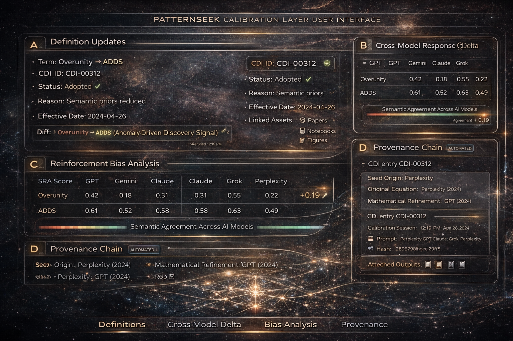

Federated calibration, made visible
This page is a live example of how PatternSeek treats language as a measurable control surface: naming variants are tested across multiple models, coherence shifts are quantified, and the full exchange is recorded as an auditable provenance chain (ChiR-IPP).
CDI: definitions & naming
Cross-model delta
SRA: reinforcement bias
Provenance ledger
The key idea is simple: **LLMs can participate in peer-like review when given shared external controls**, generating an immutable, provenance-linked calibration ledger across federated models — without requiring centralized consensus.
What it detects
- Semantic drag: when loaded terms produce inconsistent model behavior.
- Tone-driven inflation: when positive framing yields “agreement” without evidence.
- Stability under change: whether a renaming preserves the underlying math rigor.
Why it matters
- Peer review readiness: reviewers can trace metric evolution and adoption status.
- Cross-platform interoperability: calibrated definitions travel better between stacks.
- Auditability: disputes become diffs + datasets + run IDs, not arguments.

Concept mock: Panels A–D (CDI ledger, cross-model delta, SRA gauge, ChiR-IPP provenance chain).
Implementation note: this “ledger” can begin as Git + signed hashes + run manifests (JSON),
then evolve into a dedicated store. The requirement is not the technology label — it’s the guarantee:
traceable inputs → repeatable runs → verifiable outputs.